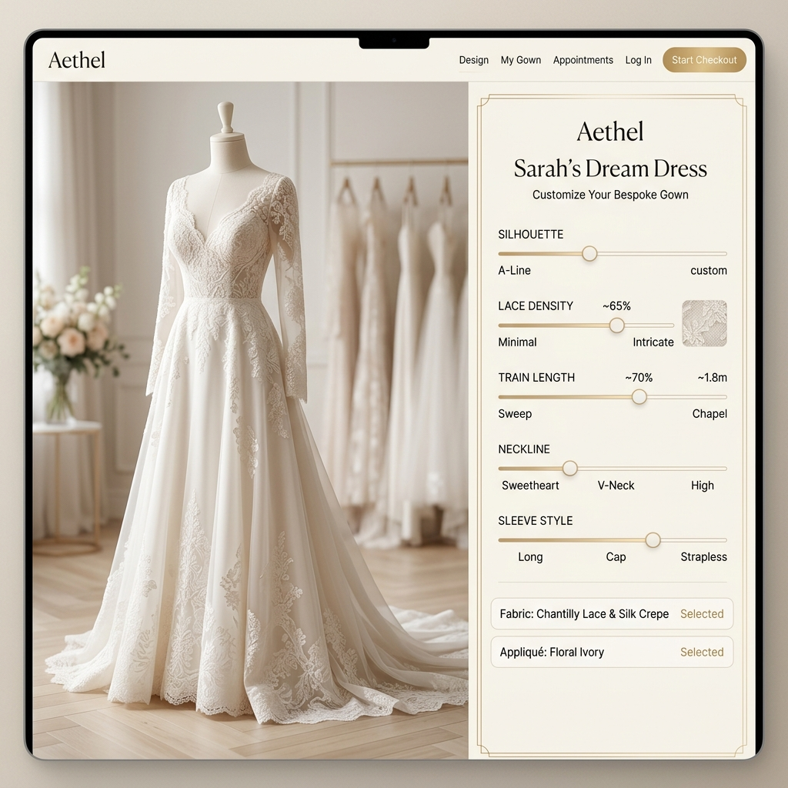

BEAUTY TECH / AI DIAGNOSTICA
「なんとなく」のスキンケアを、
「なんとなく」のスキンケアを、
医療レベルのデータへ。
SKIN-DIAGNOSTICAは、スマホのカメラで顔を撮影するだけで、シミ、シワ、水分量など肌の微細な状態をAIが解析し、数万種類の化粧品から「今のあなた」に最適な一本を導き出すAI肌診断アプリです。

THE BEAUTY MAZE
「自分に合う化粧品がわからない」という永遠の迷子
店頭に並ぶ無数の化粧品。美容部員のアドバイスも、結局は自社製品を売るためのもの。消費者は「本当に自分の肌に効くのか？」がわからないまま、高額な化粧品を買い、試しては捨てるという無駄を繰り返しています。
AI DERMATOLOGIST
皮膚科医の目をスマホに実装する
高精度フェイシャル・スキャン
特殊な機器は不要。スマホのカメラで撮った画像から、毛穴の深さ、隠れジミ、赤み、油分と水分のバランスを、医療レベルのAIが瞬時にスコア化します。
数万の成分データベースとの照合
「あなたの肌は現在バリア機能が低下しているため、セラミドが高配合されたA社の化粧水が最適です」。肌の状態と成分データを照合しマッチングを行います。
肌の変化のトラッキング
毎日撮影することで「この美容液を使い始めてから、シミの面積が5%減少した」という効果を数値とグラフで可視化。モチベーションを維持させます。
CUSTOM BLEND
パーソナライズされた「オーダーメイドコスメ」
既存の製品に合うものがなければ、診断データをもとに、あなた専用の成分をその場で調合した化粧水や美容液を工場から直送するサービスも提供します。
DYNAMIC ADVICE
生理周期や気象データとの連動
「明日は湿度が極端に下がるため、いつもより重めのクリームを使ってください」。環境や体調に合わせた日々のケアをAIが提案します。
CLIENT SUCCESS
Case Study | 大手化粧品メーカーのECサイト
自社ECサイトに当社のAI診断プラグインを導入。ユーザーが納得して購入するため、客単価が20%向上し、返品や解約率が劇的に減少しました。
OUR VISION
「美しさ」を、科学で証明する
私たちは圧倒的なデータとテクノロジーで、一人ひとりが自分史上最高の肌に出会える最短ルートを提供します。